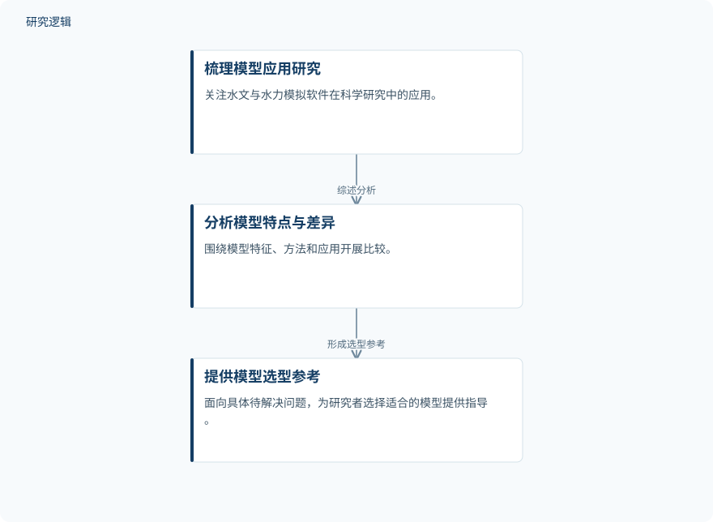

摘要解读
基于机器学习的无人机结构铝合金与钛合金性能分析
Analysis of the Performance of Aluminum and Titanium Alloys in Unmanned Aerial Vehicle (UAV) Structures Using Machine Learning Models
解读更新 2026-11-14 15:57 · 依据公开摘要整理，未核验全文细节
无人机结构选材需要同时权衡重量、承载能力、疲劳性能与工程可用性。这项研究汇集铝合金和钛合金的多来源属性数据，借助机器学习分析多指标之间的非线性关系，其阅读价值在于理解材料选型如何从单项性能比较转向综合评价。
文章目录
无人机选材不只是比较强度与重量
铝合金和钛合金是摘要所述无人机系统中的常用材料。研究将选材视为复杂的多准则问题：除了密度、弹性和强度，还需考虑疲劳表现、耐腐蚀性、焊接性、成本及可获得性。材料属性的覆盖范围与工程相关性，是这项研究强调的数据建模基础。
汇集材料属性，联合处理定量与定性参数
研究从已报告的实验数值和可靠文献来源汇集铝合金、钛合金样本，整合物理、力学、疲劳及使用相关属性。机器学习模型同时考虑定量与定性参数，用于考察设计要求之间的非线性交互；摘要没有给出具体算法或训练流程。
摘要列出的属性包括密度、杨氏模量、屈服强度、极限抗拉强度、疲劳强度、疲劳寿命、硬度、耐腐蚀性、焊接性、成本等级和可获得性。需要注意，摘要声称每个样本包含12项属性，但这一数量与随后列举的项目并不一致，不能据此自行补全缺失属性。
依据摘要整理的材料属性建模过程


仅概括摘要明确描述的数据汇集、属性整合与机器学习分析关系，不代表论文原图，也不补充未报告的模型配置。
下载 SVG图示关系说明
实线表示相邻阶段的信息流，虚线表示跨阶段联系或反馈。
实验报告与可靠文献 → 整合多类材料属性：汇集并整合；整合多类材料属性 → 机器学习分析：作为模型参数
模型可靠性与泛化提升仍是定性报告
摘要报告，所开发的机器学习模型表现出更好的可靠性和泛化能力，并认为其对无人机结构设计与材料选择具有工程价值。但摘要没有提供相应指标、提升幅度或比较对象，因此目前只能将其理解为作者的定性结果陈述，不能据此判断哪类模型或哪种合金更优。
样本规模、比较基准和验证边界尚不清楚
仅凭本次摘要，无法判断样本规模、合金牌号覆盖、不同来源数据的可比性，以及定性属性如何编码；也无法确认预测目标、训练与测试划分、比较基准和独立验证范围。这些信息未在摘要中报告，不代表论文没有开展相关工作。
尤其需要区分模型可靠性与结构可靠性：摘要对模型表现的描述，不能直接视为无人机结构疲劳安全已经得到验证，也不足以证明模型能够适用于未见过的材料或服役条件。
阅读启发：关注疲劳指标如何进入选材判断
阅读启发：后续阅读可重点追问，疲劳强度与疲劳寿命如何与密度、成本等属性共同参与选材，以及“泛化能力改善”具体针对什么任务、采用什么证据。对结构疲劳与可靠性方向的读者，关键是核对模型评价与实际工程决策之间的联系，而非把属性被纳入模型等同于疲劳可靠性已获验证。
以上为本站阅读启发与建议，不是论文已验证的结论。